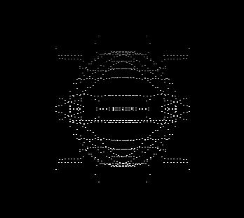

固体中の準粒子構造の研究
真空中から運動する電子が磁場によって曲げられるときに放射する「放射光」は、物理学、生物学、地球科学、医療など多くの科学分野で欠かせないツールとなっている。 近年、光電子分光装置の高分解能化(エネルギー・運動量)や極低温化が飛躍的に進み、Ce 化合物の近藤共鳴ピークの観測、超伝導体のボゴリュ−ボブ準粒子や超伝導ギャップの直接観測、銅酸化物高温超伝導体のフェルミ準位をよぎるバンドの折れ曲がり構造(kink構造)の観測など、フェルミ準位近傍の微小な準粒子状態の観測が可能となってきた。 しかし、その準粒子状態の解釈には未だに多くの議論が絶えない。こうした微細電子構造の解釈を基礎づけるためには、比較的電子構造が単純で、物性がよくわかっている系に関する精密な実験研究を積み重ねていくことが強く望まれる。 BL-1 グループでは、単体金属(Cu、Ni、Rh ...)や、希土類金属(Ce ...)などについて放射光を用いた高分解能光電子分光により準粒子状態の観測を行っている。

電子相関が働くと、裸の電子やホールに代わって「相互作用の衣を着た」電子やホール、すなわち準粒子が系の素励起となる。 我々は放射光を用いて固体内部から電子を取り出し光電子のエネルギーと運動量を調べることで、固体中で電子が受けていた相互作用の情報を知ることが出来る。
Fermi Surface Mapping
フェルミ面の形状は固体の伝導特性や磁性に大きく影響する。 角度分解光電子分光測定において、試料の回転角を三次元的に制御し放出された光電子を全方位で捉える。 すなわち、光電子の運動エネルギーを固定したままで波数空間で球面上の点について電子状態を測定していることになる。 このように光電子の運動エネルギーを固定して光電子強度の波数依存性を測定することは、等エネルギーマッピングと呼ばれ、フェルミ準位において測定したものはフェルミ面マッピングと呼ばれる。 さらに、放射光のエネルギーを変化させ、波数の垂直成分の変化を測定することでフェルミ面を三次元的に測定することが出来る。
以下に示す図は単体Cu 単結晶を用いて決定した三次元フェルミ面である。

Cuのフェルミ面 三浦雄一、修士論文 (広島大学、2006年)
Cuのフェルミ面 三浦雄一、修士論文 (広島大学、2006年)